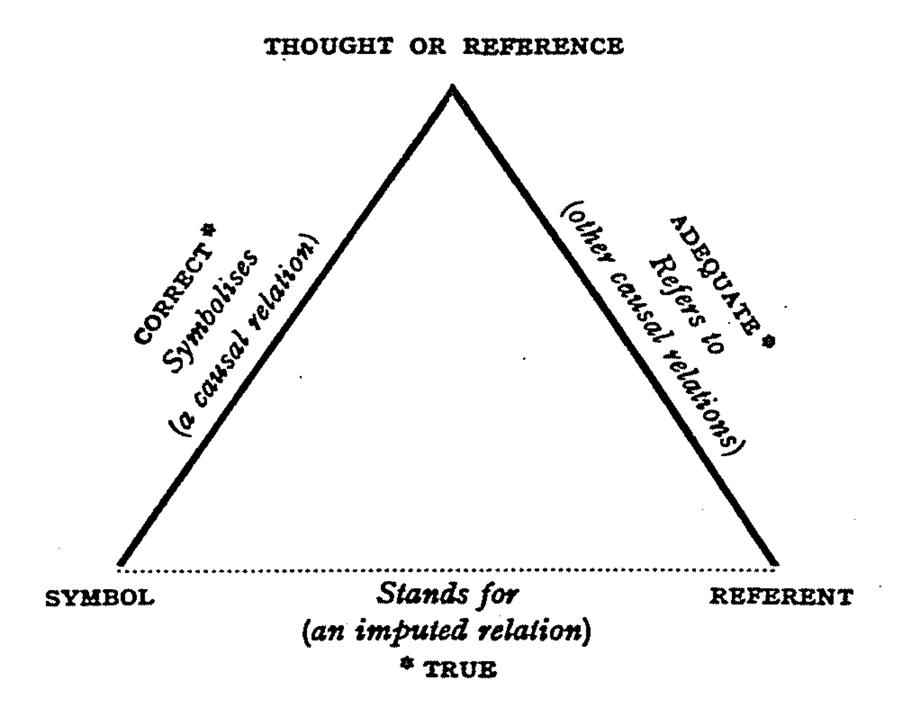

02 Words, Dictionaries, and the Lexicon
What is a word? (Bauer 2022)
Criteria
- utterance
- “A word is the smallest unit which can stand on its own as an utterance.” (p. 1)
- but:
- mentioning
- A: Is it ‘inadvisable’ or ‘unadvisable’?
- B: Un.
- A: Is it ‘inadvisable’ or ‘unadvisable’?
- grammatical words: e.g. the
- mentioning
- “A word is the smallest unit which can stand on its own as an utterance.” (p. 1)
- phonology
- “A word is a unit which, when pronounced in isolation, has a single intonational focus point, or movement of pitch.” (p. 2)
- but:
- in the beginning vs first vs forever vs for ever
- “A word is a unit which, when pronounced in isolation, has a single intonational focus point, or movement of pitch.” (p. 2)
- meaning
- “A word has a single, unitary meaning.” (p. 2)
- but:
- finally vs in the end
- “A word has a single, unitary meaning.” (p. 2)
- spelling
- “words are unitary orthographic units” (p. 2)
- but:
- coffee pot vs coffee-pot
- in so far as vs in-so-far-as
- diachronic change: all right vs alright
- coffee pot vs coffee-pot
- “words are unitary orthographic units” (p. 2)
- dictionary entry
- “A word is listed in the dictionary.” (p. 2)
- but:
- circular reasoning: words are listed because they are words
- dictionaries also list smaller units (e.g. prefix un-)
- circular reasoning: words are listed because they are words
- “A word is listed in the dictionary.” (p. 2)
- practical definition
- “[…] in general we will accept the spelling conventions of English as defining words. This might not be terribly scientific, but it has the advantage of being practical.” (p. 3)
Further reading: Haspelmath 2023 ‘Defining the Word’. WORD 69 (3): 283–97. https://doi.org/10.1080/00437956.2023.2237272
Problems in delineating the term word
Names
- “A word is a linguistic item which helps us discuss the world around us.
It is a unit which not only has form (a phonological structure or an orthographic one), but also meaning.
In this sense, names are words. But names are different from other words in a number of ways. They have unique reference: Samantha refers to one particular person in a given context, tree refers to a set of items, one or more of which is relevant in the given context.” - Semiotic Triangle (Ogden and Richards 1923):
- 
- definite reference examples:
- the Samantha
– This is not the Paris I used to know. (use as common noun)
- the Samantha
- roles as noun phrases – no modifiers:
the former Argentine
Multi-word expressions (MWE)
Compounds
- passion flower
- sunflower
- wall-flower
- onomasiological competition between formal variants:
– honey bee
– honeybee
Phrasal verbs
- He passed out.
- He fainted.
Collocations
- collocation continuum
- strong collocations: kith and kin
- intermediate
– all things considered
– as a matter of fact
– excuse me
– good afternoon
– I’m sorry to say
– in other words
– in the long run
- weak collocations: in the
- strong collocations: kith and kin
Idioms
- He kicked the bucket.
- He died.
Proverbs
- Too many cooks spoil the broth.
- *The broth has been spoilt by too many cooks.
Paradigms
Inflectional paradigms
“The term ‘paradigm’ is in general usage, but its usage is often limited. Although paradigm can justifiably be used of any substitution class, it is most often used of substitution classes within the word. Thus the normal use for the term paradigm is the kind of substitution class illustrated in the following example.” (Bauer)
- walk
- walks
- walked
- walking
This paradigm illustrates two different kinds of word: there is a sense in which all the items are different word-forms, and a contrasting sense in which the paradigm illustrates different uses of the same word, the lexeme.”
Derivational paradigms
| deceive | employ | proceed | theorise | |
|---|---|---|---|---|
| Verb | deceive | employ | proceed | theorise |
| Noun | deception | employer | process | theory |
| Adjective | deceptive | employable | processual | theoretical |
Although these examples show individual word families, these series are often generalised over several word families (e.g. theory/theorist/theorise parallels fantasy/fantasist/fantasise).
Practice: Using the OED
- Which types of ‘problematic cases’ of words are included in the OED?
- What kind of information does the OED provide about their atypical features?
Candidate types
- spelling variation
- compounds
- phrasal verbs and prepositional verbs
- collocations, idioms, and proverbs